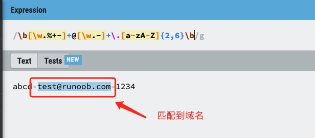
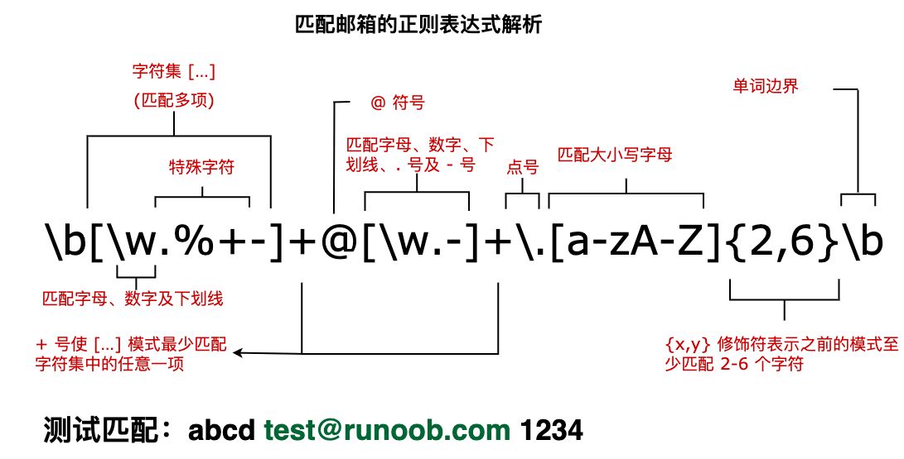

Regular Expressions -Metacharacters
Metacharacters in regular expressions are characters with special meanings. They do not represent literal characters, but are used to control the matching pattern.
Basic Metacharacters
.(dot)
-
Matches any single character except newline (
\n) outside any single characterExample:
a.bMatches "aab", "a1b", "a b", etc.
^(caret)
-
Matches the start position of the string
-
Example:
^abcMatches strings starting with "abc"
$(dollar sign)
-
Matches the end position of the string
-
Example:
xyz$Matches strings ending with "xyz"
\(backslash)
-
Escape character, it makes the following character lose its special meaning
-
Example:
\.Matches an actual dot instead of any character
Character Class Metacharacters
[](square brackets)
-
Defines a character set, matches any one character in it
-
Example:
[aeiou]Matches any one vowel letter
[^](negated character class)
-
Matches any character not in the square brackets
-
Example:
[^0-9]Matches any non-digit character
-(hyphen)
-
Represents a range within a character class
-
Example:
[a-z]Matches any lowercase letter
Quantifier Metacharacters
*(asterisk)
-
Matches the preceding subexpression zero or more times
-
Example:
ab*cMatches "ac", "abc", "abbc", etc.
+(plus sign)
-
Matches the preceding subexpression one or more times
-
Example:
ab+cMatches "abc", "abbc" but not "ac"
?(question mark)
-
Matches the preceding subexpression zero or one time
-
Example:
colou?rMatches "color" and "colour"
{n}(curly braces)
-
Match exactly n times
-
Example:
a{3}Matches "aaa"
{n,}
-
Match at least n times
-
Example:
a{2,}Matches "aa", "aaa", etc.
{n,m}
-
Match n to m times
-
Example:
a{2,4}Matches "aa", "aaa", "aaaa"
Grouping and Alternation Metacharacters
()(parentheses)
-
Defines a subexpression or capture group
-
Example:
(ab)+Matches "ab", "abab", etc.
|(vertical bar)
-
Represents an "or" relationship
-
Example:
cat|dogMatches "cat" or "dog"
Special Character Class Metacharacters
\d
-
Matches any digit, equivalent to
[0-9]
\D
-
Matches any non-digit, equivalent to
[^0-9]
\w
-
Matches any word character (letter, digit, underscore), equivalent to
[a-zA-Z0-9_]
\W
-
Matches any non-word character, equivalent to
[^a-zA-Z0-9_]
\s
-
Matches any whitespace character (space, tab, newline, etc.)
\S
-
Matches any non-whitespace character
Boundary Matching Metacharacters
\b
-
Matches a word boundary
-
Example:
\bcat\bMatches "cat" but not "category"
\B
-
Matches a non-word boundary
-
Example:
\Bcat\BMatches "cat" in "scattered" but not the standalone "cat"
Other Metacharacters
\n
-
Matches newline
\t
-
Matches tab
\r
-
Matches carriage return
\f
-
Matches form feed
\v
-
Matches vertical tab
Greedy and Non-Greedy Quantifiers
By default, quantifiers (*, +, ?, {}) are greedy, matching as many characters as possible. Add after the quantifier?to make it non-greedy (lazy) mode:
-
*?: zero or more, but as few as possible -
+?: one or more, but as few as possible -
??: zero or one, but as few as possible -
{n,m}?: n to m times, but as few as possible
Example:<.*?>When matching HTML tags, it does not match across tags
Positive and Negative Lookahead
(?=...)(positive lookahead)
-
Matches a position followed by a specific pattern
-
Example:
Windows(?=95|98)Matches "Windows" followed by 95 or 98
(?!...)(negative lookahead)
-
Matches a position not followed by a specific pattern
-
Example:
Windows(?!95|98)Matches "Windows" not followed by 95 or 98
(?<=...)(positive lookbehind)
-
Matches a position preceded by a specific pattern
-
Example:
(?<=95|98)WindowsMatches "Windows" preceded by 95 or 98
(?<!...)(negative lookbehind)
-
Matches a position not preceded by a specific pattern
-
Example:
(?<!95|98)WindowsMatches "Windows" not preceded by 95 or 98
Examples
Next, let's analyze a regular expression for matching email addresses, as shown below:
Examples
The text marked below is the expression with the obtained matches:
test@runoob.com

Try it »

The following table contains a complete list of metacharacters and their behavior in the context of regular expressions:
| Character | Description |
|---|---|
| \ | Marks the next character as a special character, a literal character, a backreference, or an octal escape. For example, 'n' matches the character "n". '\n' matches a newline. The sequence '\\' matches "\" and "\(" matches "(". |
| ^ | Matches the start of the input string. If the Multiline property of the RegExp object is set, ^ also matches positions after '\n' or '\r'. |
| $ | Matches the end of the input string. If the Multiline property of the RegExp object is set, $ also matches positions before '\n' or '\r'. |
| * | Matches the preceding subexpression zero or more times. For example, zo* can match "z" as well as "zoo". * is equivalent to {0,}. |
| + | Matches the preceding subexpression one or more times. For example, 'zo+' can match "zo" as well as "zoo", but cannot match "z". + is equivalent to {1,}. |
| ? | Matches the preceding subexpression zero or one time. For example, "do(es)?" can match "do" or "does". ? is equivalent to {0,1}. |
| {n} | n is a non-negative integer. Match exactly n times. For example, 'o{2}' cannot match 'o' in "Bob", but can match the two o's in "food". |
| {n,} | n is a non-negative integer. Match at least n times. For example, 'o{2,}' cannot match 'o' in "Bob", but can match all o's in "foooood". 'o{1,}' is equivalent to 'o+'. 'o{0,}' is equivalent to 'o*'. |
| {n,m} | m and n are both non-negative integers, where n <= m. Matches at least n times and at most m times. For example, "o{1,3}" will match the first three o's in "fooooood". 'o{0,1}' is equivalent to 'o?'. Note that there must be no spaces between the comma and the two numbers. |
| ? | When this character immediately follows any other quantifier (*, +, ?, {n}, {n,}, {n,m}), the matching mode is non-greedy. Non-greedy mode matches as little of the searched string as possible, while the default greedy mode matches as much as possible. For example, for the string "oooo", 'o+?' will match a single "o", while 'o+' will match all 'o's. |
| . | Matches any single character except newline (\n, \r). To match any character including '\n', use a pattern like"(.|\n)" pattern. |
| (pattern) | 匹配 pattern 并获取这一匹配。所获取的匹配可以从产生的 Matches 集合得到，在VBScript 中使用 SubMatches 集合，在JScript 中则使用 $0…$9 属性。要匹配圆括号字符，请使用 '\(' 或 '\)'。 |
| (?:pattern) | Matches pattern but does not capture the match result, that is, this is a non-capturing match, not stored for later use. This is useful when using the "or" character (|) to combine the parts of a pattern. For example, 'industr(?:y|ies)' is a more concise expression than 'industry|industries'. |
| (?=pattern) | Positive lookahead assert. Matches the search string at the beginning of any string that matches pattern. This is a non-capturing match, that is, the match does not need to be captured for later use. For example, "Windows(?=95|98|NT|2000)" matches "Windows" in "Windows2000", but cannot match "Windows" in "Windows3.1". Lookahead does not consume characters, that is, after a match occurs, the search for the next match starts immediately after the last match, not from after the characters included in the lookahead. |
| (?!pattern) | Negative lookahead assert. Matches the search string at the beginning of any string that does not match pattern. This is a non-capturing match, that is, the match does not need to be captured for later use. For example, "Windows(?!95|98|NT|2000)" matches "Windows" in "Windows3.1", but cannot match "Windows" in "Windows2000". Lookahead does not consume characters, that is, after a match occurs, the search for the next match starts immediately after the last match, not from after the characters included in the lookahead. |
| (?<=pattern) | Positive lookbehind assert, similar to positive lookahead assert, except the direction is opposite. For example, "(?<=95|98|NT|2000)Windows"can match"2000Windows"in"Windows", but cannot match"3.1Windows"in"Windows"。 |
| (?<!pattern) | Negative lookbehind assert, similar to negative lookahead assert, except the direction is opposite. For example(?<!95|98|NT|2000)Windows"can match"3.1Windows"in"Windows", but cannot match"2000Windows"in"Windows"。 |
| x|y | Matches x or y. For example, 'z|food' can match "z" or "food". '(z|f)ood' matches "zood" or "food". |
| [xyz] | Character set. Matches any one of the included characters. For example, '[abc]' can match 'a' in "plain". |
| [^xyz] | Negated character set. Matches any character not included. For example, '[^abc]' can match 'p', 'l', 'i', 'n' in "plain". |
| [a-z] | Character range. Matches any character within the specified range. For example, '[a-z]' can match any lowercase letter character in the range 'a' to 'z'. |
| [^a-z] | Negated character range. Matches any character not within the specified range. For example, '[^a-z]' matches any character not in the range 'a' to 'z'. |
| \b | Matches a word boundary, that is, the position between a word and a space. For example, 'er\b' can match 'er' in "never", but cannot match 'er' in "verb". |
| \B | Matches a non-word boundary. 'er\B' can match 'er' in "verb", but cannot match 'er' in "never". |
| \cx | Matches a control character indicated by x. For example, \cM matches a Control-M or carriage return. The value of x must be one of A-Z or a-z. Otherwise, treat c as a literal 'c' character. |
| \d | Matches a digit character. Equivalent to [0-9]. |
| \D | Matches a non-digit character. Equivalent to [^0-9]. |
| \f | Matches a form-feed character. Equivalent to \x0c and \cL. |
| \n | Matches a newline character. Equivalent to \x0a and \cJ. |
| \r | Matches a carriage return character. Equivalent to \x0d and \cM. |
| \s | Matches any whitespace character, including space, tab, form feed, etc. Equivalent to [ \f\n\r\t\v]. |
| \S | Matches any non-whitespace character. Equivalent to [^ \f\n\r\t\v]. |
| \t | Matches a tab character. Equivalent to \x09 and \cI. |
| \v | Matches a vertical tab character. Equivalent to \x0b and \cK. |
| \w | Matches letters, digits, underscores. Equivalent to '[A-Za-z0-9_]'. |
| \W | Matches non-letters, digits, underscores. Equivalent to '[^A-Za-z0-9_]'. |
| \xn | Matches n, where n is a hexadecimal escape value. The hexadecimal escape value must be exactly two digits long. For example, '\x41' matches "A". '\x041' is equivalent to '\x04' & "1". ASCII encoding can be used in regular expressions. |
| \num | Matches num, where num is a positive integer. A back-reference to a captured match. For example, '(.)\1' matches two consecutive identical characters. |
| \n | Identifies an octal escape value or a back-reference. If there are at least n captured subexpressions before \n, then n is a back-reference. Otherwise, if n is an octal digit (0-7), then n is an octal escape value. |
| \nm | Identifies an octal escape value or a back-reference. If there are at least nm captured subexpressions before \nm, then nm is a back-reference. If there are at least n captures before \nm, then n is a back-reference followed by literal m. If none of the preceding conditions are met, and n and m are both octal digits (0-7), then \nm matches the octal escape value nm. |
| \nml | If n is an octal digit (0-3), and m and l are both octal digits (0-7), then match the octal escape value nml. |
| \un | Matches n, where n is a Unicode character represented by four hexadecimal digits. For example, \u00A9 matches the copyright symbol (?). |
沧海一个
100***cn.com
Reference URL
The difference between (?=xox) and (?<=xox):
These two can be regarded as a virtual "empty slot" between matched characters.(?=xox)Matches the empty slot before xox, while(?<=xox)Matches the empty slot after xox.
So forabxoxcd：
沧海一个
100***cn.com
Reference URL
anonym
ano***@anonym.com
?=、?!、?<= ?<!Used to qualify the expressions before and after it; cannot be used alone and has no effect by itself.
Description?=、?!、?<= ?<!The existing translations of "Positive/Negative lookahead/lookbehind assert", such as "正先行断言" and "正向肯定预查", are not easy to understand, or are inaccurate, or even wrong. "lookaround" refers to looking before and after, not "预查"; it means acting on the expressions before and after, and is a collective term for "lookahead" (meaning looking forward, not "先行") and "lookbehind" (meaning looking backward, not "后发"). "assert" means judgment, not "断言". Positive and Negative refer to affirmative and negative, not positive and negative.
anonym
ano***@anonym.com
久狼君
108***3455@qq.com
Reference URL
Combining the above two [comments] and my own experiments to summarize: every result used below I have run on this website's API.I can be responsible for the correctness of the following conclusions.
The syntax introduction earlier says a sentence:Non-capturing metacharacters ?:, ?=, or ?! can be used to rewrite captures, ignoring the saving of related matches.
Therewrite captureis the key phrase.
Therefore, this type of regular expression has two steps.
1. Step 1: Match
First, forget about positive/negative and lookahead/lookbehind. Only if the regex can match is there a second step. Suppose the original string is "abcdefgh"
Can the original string contain cde, with a dot before cde (any single character except newline, etc.), and then, moreover, a string that starts from c and has two characters after it?
According to the above formula,abcdefgh"bcde can be matched in it.
2. Step 2: Rewrite the capture
Then rewrite according to positive/negative and lookahead/lookbehind. Here we only discuss the two affirmative cases.
First, you must remember that you matched bcde.
- This is called positive, so the character b matched before the expression cde remains unchanged. You only need to look at what follows the expression to determine what to rewrite. It is two dots, so start from c and read two characters forward, i.e., cd, and rewrite it into the result of the middle bracket match (originally cde), so the final result is bcd. Here, using /.(?=cde)cd/ gives the same result.
- If there are four dots afterward, then read four characters from c forward, i.e., cdef, so the final result is bcdef. Here, using /.(?=cde)cdef/ gives the same result.
But remember, the subsequent matching also needs to start from c. If it doesn’t match, null will be returned here. For example, /.(?=cde)f/ or /.(?=cde)d/ will both return null.
Regarding (?<=)
1. Similarly, it is divided into two steps; the first step is the same as above.
/....(?<=cde)../This is reverselookup,So find a string that contains cde, has two characters after cde, and has four characters when counting backwards from e.
In "abcdefgh", bcdefg is matched.
2. Second step
The two characters corresponding to the two dots after cde remain unchanged, i.e., fg remains unchanged. There is a dot in front, and since it is reverse, read four characters from after cde going backwards, that is,bcderewrite it into the match result of the middle parentheses (originally cde), so the final result isbcdefg。
Similarly, if there are two dots in front /..(?<=cde)../, read two characters backwards from e, and the result is defg.
If two examples let you infer four, I believe this syntax is no longer difficult.
Jiulang Jun
108***3455@qq.com
Reference address